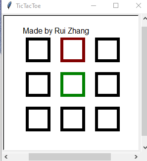
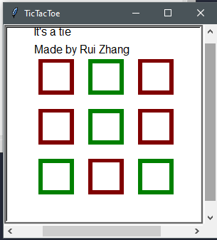

This program was programmed in python with the turtle, time, random and os module. I am not really sure when I actually made this program, but it was probably in 2019.
I remember I made this program because I heard Bill Gates made a tic-tac-toe game where you could play against the computer at a young age. So, I wanted to give it a shot myself. After about one to two weeks of work (I believe it was one to two, but again, I am not sure at all!), the program was finished. Back then I thought it was unbeatable, but now, through testing, I know there are probably one to two ways you can beat the computer.
Recently, I have also found out that you can break the algorithm too! 😢
Features
So this program is pretty basic at first sight. You play Tic-Tac-Toe against the computer, you click on a square and it turns red. Then the computer waits a little and then clicks on another square.
The squares the player clicks on are red and the squares the computer clicks on are green. Once the game ends, the program displays who has won. If it's a tie, it'll display that too.


How this program does its thing
When I made this program, my initial idea was this:
- If it is at the beginning of the game, the program tries to pick a square that will be the most beneficial (middle or edges)
- Check whether or not the algorithm has almost won (two in a row) and click on a block that will make it win
- Check whether or not the player has almost won (two in a row) and prevent that
- If none applies, click on a square that will be the most beneficial for the computer
- If the algorithm has still not done anything, it will chose a random square (because back then in my testing, this only happened when your at the end of a game and it will result in a tie.)
So lets go through each step:
In the first step, the program will chose one of the best squares to start off with in tic-tac-toe (middle or edges). This happens at the beginning, where the player has made their first move. If this part didn't exist, the program will choose a random square (5) because all other steps won't result in a move!
Second step: if the program has two squares in a row, it should choose the square in that row / column / diagonal. This works by making a variety of lists that contain all of the squares picked by the Algorithm. These lists represent the rows, columns, and diagonals. If any of those lists has a length of 2, the computer will then choose the square that is left.
In the third step, the computer prevents a player from winning if the player already has two in a row. This works just like the second step.
The fourth step is a little more complicated. The algorithm goes through all squares and assigns a value to each square. This works by checking how many times the computer can "block" the player (by preventing a two in a row, not three in a row) and how many times the computer can benefit from this move (how many "routes" it creates for the computer, so how many tow in a rows).
At the end, the algorithm picks the square that has the highest value.
In the final square, the algorithm picks a random square. This is to prevent the program from doing absolutely nothing, which only happened towards the end of the game.
I have to admit though, it has been a long while since I have last looked at the code, so the explanations above should be correct, but does not have to be.
Conclusion
This algorithm was really fun to make. But sadly, back then I didn't put memory etc. into the equation, which resulted in a total of......
a lot of lists.
In addition to that, constant nesting of for loops probably resulted in much slower performance. The algorithm wasn't slow in the end though, but if I were to add some more functionality with more nested for loops, it could get reallllllll sloooowwwww.
So all in all, I am still somewhat proud of me having managed to create this algorithm. But still, there is something to improve. I don't think I will be revisiting this algorithm anytime soon though. As of 01.05.2020, I have a lot of other projects planned and still want to learn a variety of new things. Maybe at the end of this year, I will recreate this algorithm and improve it.
Downloads
There is only two version of this program, one where you can look at the code if you understand python and another for the user who doesn't need the code because they don't understand it in the first place. Here you can download it, but before you do that, I'd have to tell you one more thing: Once you start the .exe file in the folder, you would have to close the program by opening task manager. Else, the program will run in the background for some reason...